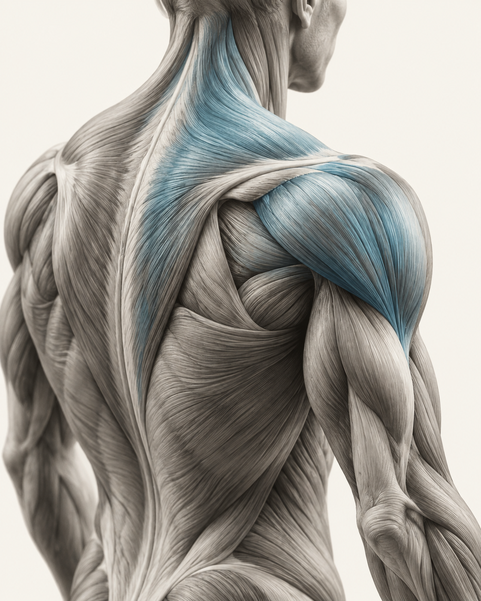

Medical massage
Also called clinical or therapeutic massage: focused work with muscles and other soft tissues, guided by a person’s concerns and treatment goals.
The overall approachBODY WORKS · WITH LESLIE DELONG
Medical massage, trigger point work, and hands-on soft-tissue therapy. Care centered on specific muscle concerns and how you move.
Therapeutic care, not a spa relaxation massage.
Understand the approach
YOUR NEXT STEP
Choose a session, find a time, review your request.
THE APPROACH
Body Works focuses on therapeutic muscle work. These terms describe the approach and techniques—not three separate services you need to choose between.
Also called clinical or therapeutic massage: focused work with muscles and other soft tissues, guided by a person’s concerns and treatment goals.
The overall approachTargeted manual pressure on tender muscle areas often called “knots.” A sensitive spot can hurt locally or reproduce discomfort elsewhere.
A focused techniqueA plain-language description of hands-on soft-tissue work, such as compression and kneading. Here, manipulation means working with muscle—not a spinal adjustment.
The hands-on workAbout these terms: Cleveland Clinic: therapeutic massage, trigger point massage and Ohio’s massage therapy scope.
THERAPEUTIC DOESN’T MEAN FORCEFUL
Tender areas may feel sensitive, but severe pain is not the goal. Tell your therapist when pressure is too much; you can ask to adjust or stop at any time.
Discuss your symptoms, health history, and goals before treatment. The right approach depends on your needs and whether massage is appropriate for you.
Before your appointmentMEET LES
An independent practice with a focus on medical massage and muscle work.
Body Works is Les’s practice. Its focus is hands-on therapy for muscle and soft-tissue concerns, including trigger point work.
Les’s full biography and appointment details will be added to the finished website.
BEFORE YOU BOOK
Know what the work is—and what to expect from it.
The focus at Body Works is therapeutic muscle and soft-tissue work, rather than a soothing spa experience. A session can still feel calming; relaxation is simply not the main purpose.
They overlap, but aren’t identical. Medical massage describes the therapeutic purpose. Trigger point work is one targeted technique that can be used within that approach.
No. Tell the therapist about sharp, worsening, or severe pain and ask for lighter pressure or a pause. More pressure is not automatically better care. Read Mayo Clinic’s guidance.
Massage is used to address muscle tension and discomfort. Some people experience symptom relief, but research varies by condition and technique, and benefits may be temporary. Results are individual; no particular outcome is guaranteed. Read the NIH overview.
No. Massage therapy can complement appropriate care. It does not provide a medical diagnosis or replace treatment from a physician or physical therapist. New, unexplained, or persistent symptoms should be evaluated by an appropriate healthcare professional.
Tell the therapist about your symptoms, recent injuries or surgery, health conditions, and medicines such as blood thinners. If you’re unsure massage is suitable, check with your healthcare provider first. Discuss private health details directly with the practice, not through this demonstration.
The online calendar is a demonstration. Actual session lengths, prices, availability, and booking policies are still being confirmed. You can preview the steps; it won’t reserve a time or send a message.
BODY WORKS
Talk with Les about the practice and appointment details.
Preview appointment bookingBusiness details from Les’s supplied card. Please confirm hours and appointment arrangements directly.